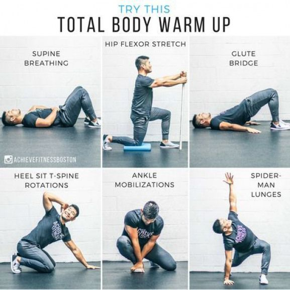
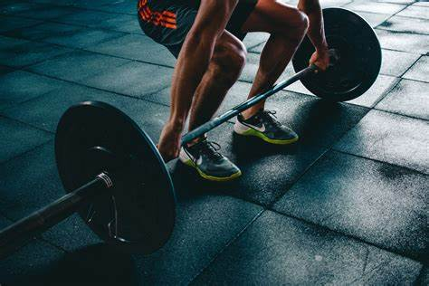
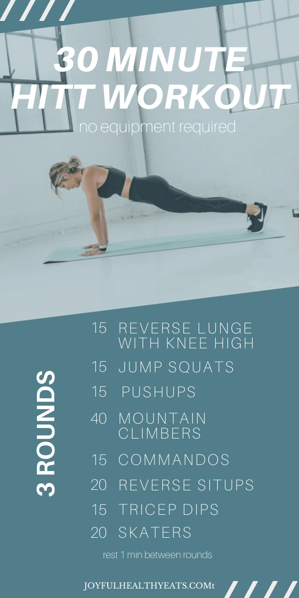
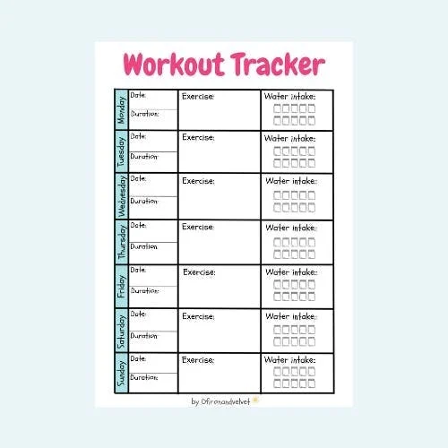

Top Workout Tips
- Start with a warm-up to avoid injuries. 
- Focus on proper form over heavy weights. 
- Stay hydrated and take breaks as needed.
- Combine strength training with cardio exercises. 
- Track your progress and stay consistent! 
Beginner Workout Plan
Click the button below to view a sample beginner-friendly workout plan.
Weekly Workout Plan:
- Day 1: Full-body strength training (30 min).
- Day 2: Cardio (20-30 min brisk walking or cycling).
- Day 3: Rest or light stretching/yoga.
- Day 4: Upper body strength training (30 min).
- Day 5: Cardio (HIIT or steady-state, 25 min).
- Day 6: Lower body strength training (30 min).
- Day 7: Active recovery (light stretching or walking).